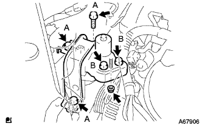

Water pump assigned |
| 1. Water pump assignment |
 |
Attach the water pump with three bolts and two nuts via a new gasket.
| 2. Water pump pulley installation |
Use SST to fix the water pumpuri.
 |
Tighten the three bolts.
| 3. Installation of engine mounting insulator SUB-ASSY RH |
|  |
Attach the engine mounting insulator RH with 5 bolts and nuts.
| 4. Alternator Assortment |
 |
Temporarily attach the alternator with a fixing bolt B.
 |
After tentatively attaching the fan belt agasting bar with bolt A and nuts, the alternator is reached to the cylinder block side to tighten the nut.
Attach a connector and wire harness clamp.
Attach the+B terminal terminal with the nut.
Attach the terminal cap.
| 5. Fan & alternator V belt installation |
The V belt is temporarily attached to each pulley.
| 6. V belt tension / deflection quantity inspection |
 |
Use a hub nut wrench or bar to draw the alternator to the vehicle front side to adjust the tension of the Juan & Alternator V belt.
 |
Tighten the adjustment bolt A and then tighten the fixing bolt B.
| 7. Cylinder head cover No.2 Installation |
 |
After tightening the nut A2, attach the nut B2 No.2 cylinder head cover.
| 8. Cooling solution (Toyota genuine super LLC) replenishment |
Close the radiator drain kotsuku plug and injection of cooling water until overflowing from the radiator injection.[ * 1]
Tighten the radiator kayatsu.
Inject the cooling solution into the radiator reserve tank to the upper limit.
Warm up the engine until the thermostatsu opens.
Stop the engine, wait for the cooling solution to cool, remove the radiator kyatsu and check the water level.
If the water level is lowered, repeat from [ * 1].
When the water level does not fall, adjust the cooling solution of the radiator reservoir battank.
| 9. Cooling solution (Toyota genuine super LLC) leak inspection |
Fill the cooling solution and attach the tester.
137kPa {1.4kgf/cm2Put the pressure of｝ and confirm that there is no leak in each part.
| 10. Engine Anda cover RH installation |
With two screws and two bolts, attach the engine undercover RH.
Tighten the nut.